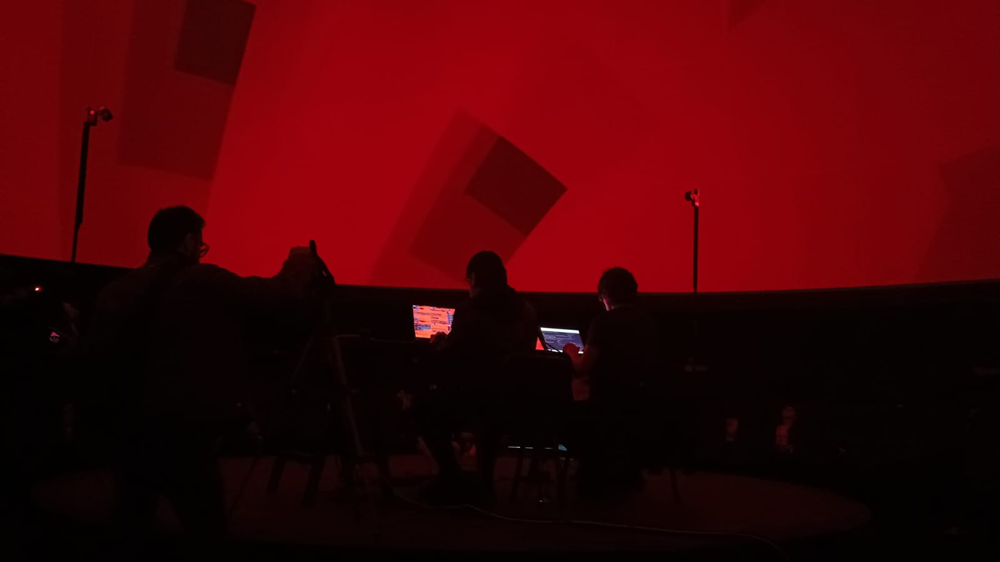
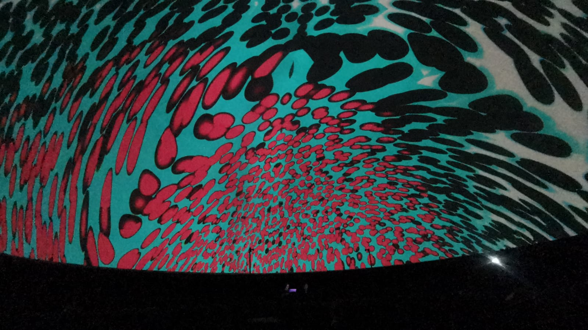

N4T3KUK (La Vorágine 2124): Un insólito mito (ciber)carnavalesco para el advenimiento del Novaceno
Un proyecto de 4L3PH
N4TEKUK es una obra narrativa y experimental, en la que se retoman ciertos preceptos y subtextos críticos y argumentales de la novela ‘La Vorágine’ de José Eustasio Rivera (obra que en el año 2024 cumplió 100 años), para realizar una extrapolación especulativa y artística que permita imaginar y experimentar el devenir de unos mundos distintos y extraños desde el corazón de la selva amazónica, y que a la vez invite a reflexionar sobre unas posibles nuevas e insólitas relaciones entre lo humano, lo más que humano y lo no humano. Esta obra, para formato Domo, se ha desarrollado a través de nuevas aproximaciones de cibervanguardia —interactivas, generativas y en red— en el campo de la creación de narrativas audiovisuales digitales, en diálogo con prácticas artísticas experimentales con nuevos medios, articuladas a debates contemporáneos desde las artes y las posthumanidades críticas, especulativas y digitales.
N4TEKUK es una obra narrativa y experimental, en la que se retoman ciertos preceptos y subtextos críticos y argumentales de la novela ‘La Vorágine’ de José Eustasio Rivera (obra que en el año 2024 cumplió 100 años), para realizar una extrapolación especulativa y artística que permita imaginar y experimentar el devenir de unos mundos distintos y extraños desde el corazón de la selva amazónica, y que a la vez invite a reflexionar sobre unas posibles nuevas e insólitas relaciones entre lo humano, lo más que humano y lo no humano. Esta obra, para formato Domo, se ha desarrollado a través de nuevas aproximaciones de cibervanguardia —interactivas, generativas y en red— en el campo de la creación de narrativas audiovisuales digitales, en diálogo con prácticas artísticas experimentales con nuevos medios, articuladas a debates contemporáneos desde las artes y las posthumanidades críticas, especulativas y digitales.


